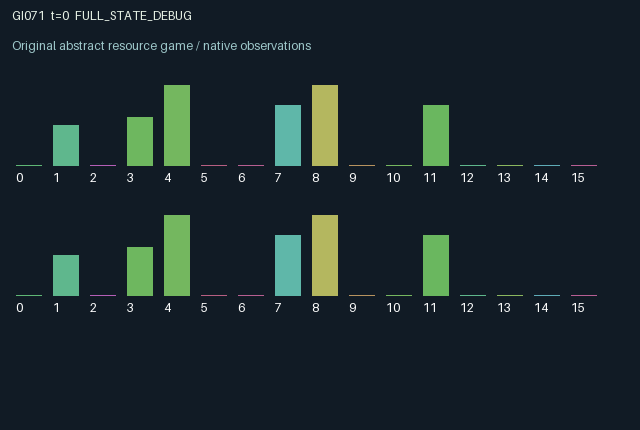

GI071 / LEGACY_ARRAY
astra-d2-00071: Coupled clutches on an inertial shared carrier
2 agents5 actions16 observation columns32 original horizonRuntime: PASS
Release verification episode
Untrained uniform legal actions. Actual JAX state sampled along the full original episode; full-state debug camera. No human performance or learning claim.

Run this game
crucibles play --game 71
Start Python locally, then open the address printed by the terminal. Installation, multiplayer, takeover and keyboard controls →
Objective, rewards & ending
Exact task contract
{
"termination": "Original kernel t >= 32; see mechanism and source"
}Declared per-step reward bounds: -1.0 to 1.0. Observability: source_defined.
Rules
Original mechanism document (historical status wording retained)
# astra-d2-00071: Coupled clutches on an inertial shared carrier This parentless source proposes two independently controlled motors mechanically coupled to a shared one-dimensional carrier. It relates to generic inertial tracking, coordination and common-resource control. The source was authored without a parent, benchmark source or experiment feedback. It does not claim nonisomorphism, originality relative to all existing environments, or demonstrated learning value. Actions are 0 coast/cool/recharge, 1 engage one's clutch, 2 disengage it, 3 reverse one's gear and 4 pulse the motor. Gear reversal is legal only while disengaged. Engagement and disengagement are legal in their corresponding current states. Pulsing requires an engaged clutch, sufficient energy and heat below 0.95. Action 0 is always legal, so each mask row remains nonempty. A clutch persists until changed, and a gear persists until reversed. Each pulse produces signed torque reduced by that motor's current heat. Both torques act on the same velocity, which then moves the same position. Engaged clutches add drag. If both clutches engage opposite gears, effective torque is reduced and any pulse heats both motors. Thus an agent can impede the other without issuing an opposite pulse: leaving an opposed clutch engaged changes the other's torque efficiency and heat. Disengagement removes that coupling and allows gear changes. Energy and heat persist; cooling and recharge trade present control for future capacity. Boundary collisions clip position and reverse part of the velocity, with a shared penalty and heating of engaged motors. Each agent has its own current target from four interior positions. A delivery requires the carrier to be near that target at low speed. On delivery, that agent alone draws one of the other three targets using the explicit key. Targets may coincide or conflict. Motor and carrier dynamics are public; each agent directly sees only its own target. Delivery indicator lights and previous actions are public, so actions and outcomes may support inference about the other's task. There is no observation column containing the other target. The 16 observation columns are clock; carrier position; carrier velocity; own target; own gear, clutch, heat and energy; other gear, clutch, heat and energy; own/other delivery indicator; own/other previous action. Position and target are mapped to [0, 1], velocity is scaled by its limit, and the two gear directions remain -1 and 1. Observations are constructed from a float32 zero matrix. Utility gives 0.65 for delivery, plus 0.30 times the reduction in distance to the current target, minus 0.055 per pulse, a small excess-heat charge and 0.04 on a boundary collision. Reward is tanh(2 times utility), bounded in [-1, 1]. The progress term uses the target before any delivery replacement. An action can change the shared velocity now and both players' position-dependent rewards on later steps. Private replacement targets make common interests intermittent rather than permanently aligned or opposed. The episode terminates at 32 transitions and preserves position, velocity, motor states and remaining targets. The author has not executed the source or initialized JAX. Syntax parsing, if performed, is not compilation, isolated validation, qualification, duplicate review or evidence of learning effectiveness.
Commands
0Action 0; see mechanism and source
1Action 1; see mechanism and source
2Action 2; see mechanism and source
3Action 3; see mechanism and source
4Action 4; see mechanism and source
Roles & abilities
agent_0 Original legacy agent; see mechanism and source
agent_1 Original legacy agent; see mechanism and source
Observation permissions
Training receives only the original observation rows. Role cameras use declared visibility; debug cameras are explicitly marked. Local benchmark records log debug exposure and role takeover history.
Exact observation layout
[]
Entity visibility & attributes
[]
Actual verification & provenance
Per-game execution receipt
{
"game": "gi071",
"status": "PASS",
"verification_revision": 2,
"source_sha256": "90905022a6954084fef4a57349994941dcc11d2acd77f70d41b2a0e4a63cf5b7",
"seed": 20261101,
"runtime": {
"jax": "0.4.38",
"numpy": "1.26.4",
"devices": [
"TFRT_CPU_0"
]
},
"dimensions": {
"num_agents": 2,
"observation_size": 16,
"num_actions": 5,
"max_steps": 32
},
"checks": {
"eager_reset": {
"status": "PASS",
"seconds": 0.6765913963317871
},
"observation_spaces_legal_masks": {
"status": "PASS",
"seconds": 0.28454089164733887
},
"eager_step": {
"status": "PASS",
"seconds": 1.0048534870147705
},
"jit_reset": {
"status": "PASS",
"seconds": 0.28481340408325195
},
"jit_step": {
"status": "PASS",
"seconds": 0.5247447490692139
},
"eager_jit_integer_parity_float_measurement": {
"status": "PASS",
"seconds": 0.0015141963958740234
},
"jit_vmap_reset": {
"status": "PASS",
"seconds": 0.24825787544250488
},
"jit_vmap_step": {
"status": "PASS",
"seconds": 0.5832133293151855
},
"outer_autoreset_api": {
"status": "PASS",
"seconds": 0.6191010475158691
},
"full_original_horizon_episode_and_render": {
"status": "PASS",
"seconds": 1.8996660709381104
}
},
"human_scores": null,
"browser_controls": "PENDING",
"failures": [],
"elapsed_seconds": 6.654689311981201,
"float_parity_max_abs": 0.0,
"numerical_parity": "EXACT",
"raw_terminal_absorbing": "NOT_PART_OF_ORIGINAL_LEGACY_CONTRACT",
"terminal_outer_reset": "PASS",
"episode_steps": 32,
"scripted_random_returns": [
-0.15031317807734013,
-0.258472022600472
],
"terminal": true,
"demo_information": "FULL_STATE_DEBUG",
"demo_frames": 33,
"render_roles_checked": 2
}Chromium control verification
{
"game": "gi071",
"status": "PASS",
"human_scores": null,
"engineering": true,
"checks": [
"catalog_selected_and_real_native_reset",
"dom_queue_and_native_step",
"second_participant_ownership_and_native_joint_step",
"all_roles_individually_controllable_no_role_cap",
"explicit_debug_camera",
"release_to_pure_ai_without_reset"
],
"seconds": 3.427363157272339
}Original identity and file hashes
{
"id": 71,
"key": "gi071",
"title": "astra-d2-00071: Coupled clutches on an inertial shared carrier",
"summary": "",
"tags": [],
"family": "legacy_array",
"dimensions": {
"num_agents": 2,
"observation_size": 16,
"num_actions": 5,
"max_steps": 32
},
"source_sha256": "90905022a6954084fef4a57349994941dcc11d2acd77f70d41b2a0e4a63cf5b7",
"manifest_sha256": "4230295c52f9247ada422d62975dbe2928c2273172c12546b25c9525809a8db8",
"files": [
{
"file": "candidate.py",
"sha256": "90905022a6954084fef4a57349994941dcc11d2acd77f70d41b2a0e4a63cf5b7",
"bytes": 5432,
"origin": "work/exp_2/astra_generation/discovery_v2/initial/candidate_00071/attempt_00/candidate.py"
},
{
"file": "mechanism.md",
"sha256": "d8b247fc768d7cf32f183e103f99839eded93978ee36f423b01b4dd9d1bbae0f",
"bytes": 3381,
"origin": "work/exp_2/astra_generation/discovery_v2/initial/candidate_00071/attempt_00/mechanism.md"
}
],
"original_status": "LEGACY_SOURCE",
"original_saved_replay": false,
"release_validation": "PASS",
"human_scores": null,
"browser_validation": "PASS"
}